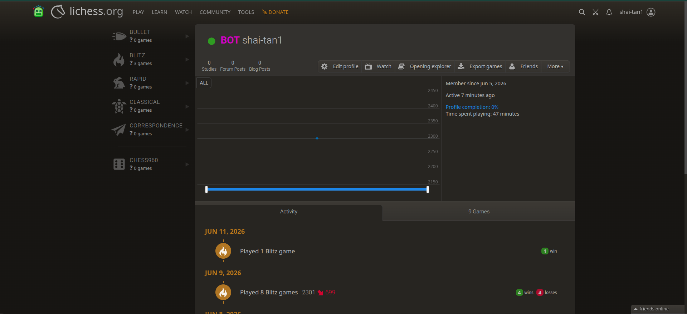
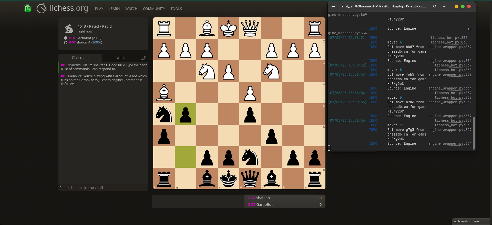
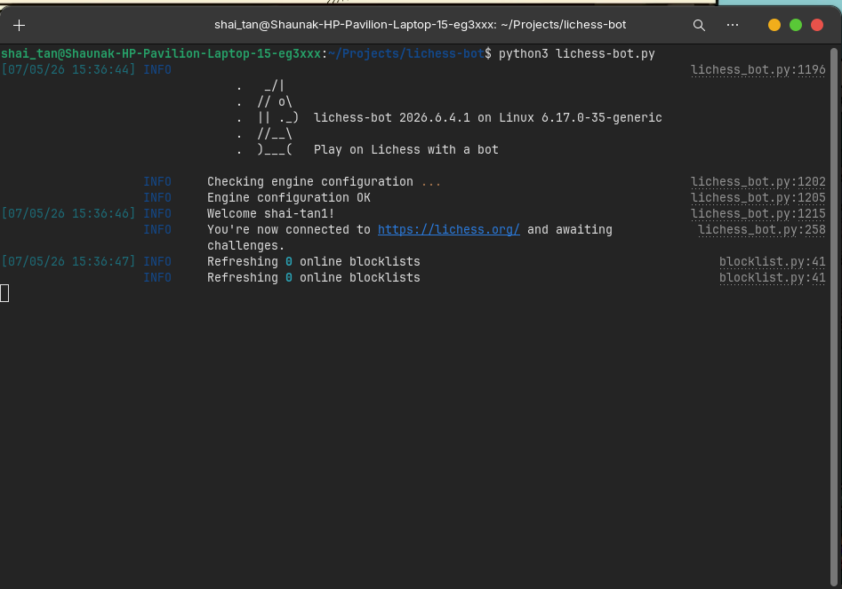
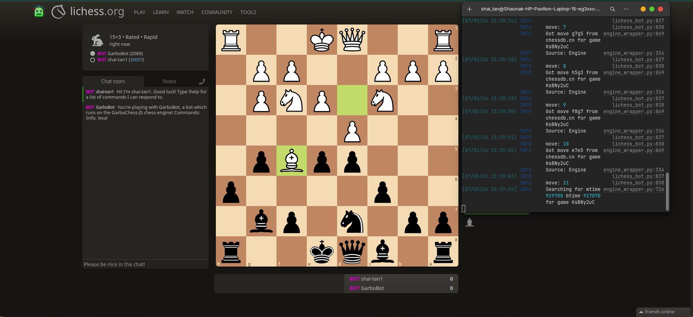

A C++ bitboard chess engine deployed on Lichess, reaching ~2200 rating using pure mathematical algorithms — no neural networks, no shortcuts.

This is a from-scratch chess engine written in C++ that competes on Lichess at approximately 2200 strength. It uses a bitboard architecture — each piece type and color is stored as a 64-bit integer, and moves are computed through bitwise operations rather than array lookups, giving a significant speed advantage.
The engine relies entirely on classical search and evaluation: alpha-beta pruning, move ordering, and a hand-crafted positional evaluation function. No neural networks, no pre-computed endgame tables borrowed from Stockfish — every technique is implemented from first principles to understand exactly why it works.
Complete move generation for all piece types including sliding piece ray-casting with blocker detection. Brian Kernighan's bit-counting algorithm for fast popcount. Leaping piece move generation for knights and kings. Full alpha-beta search with iterative deepening. The engine communicates via UCI protocol for Lichess integration.


